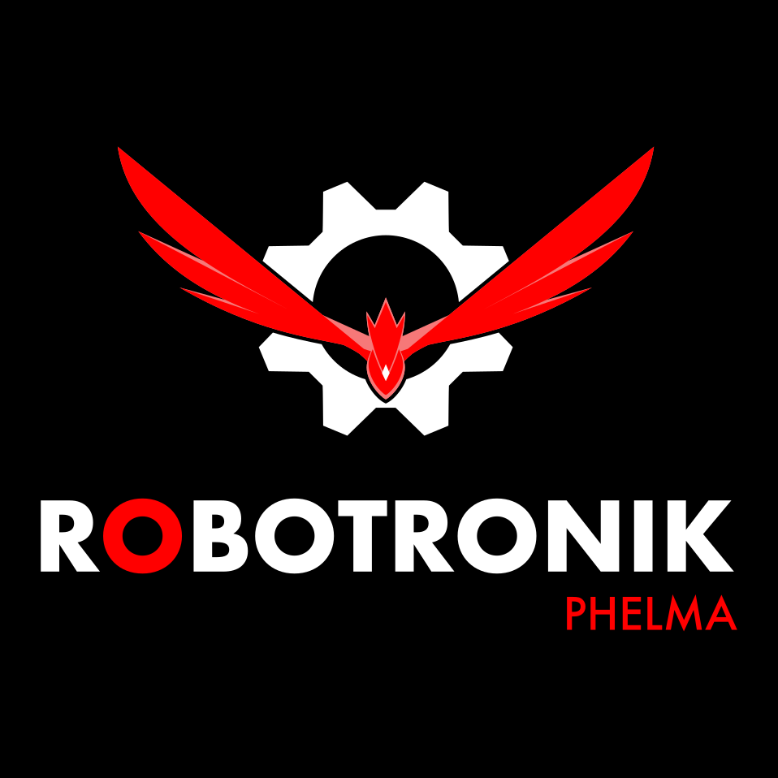
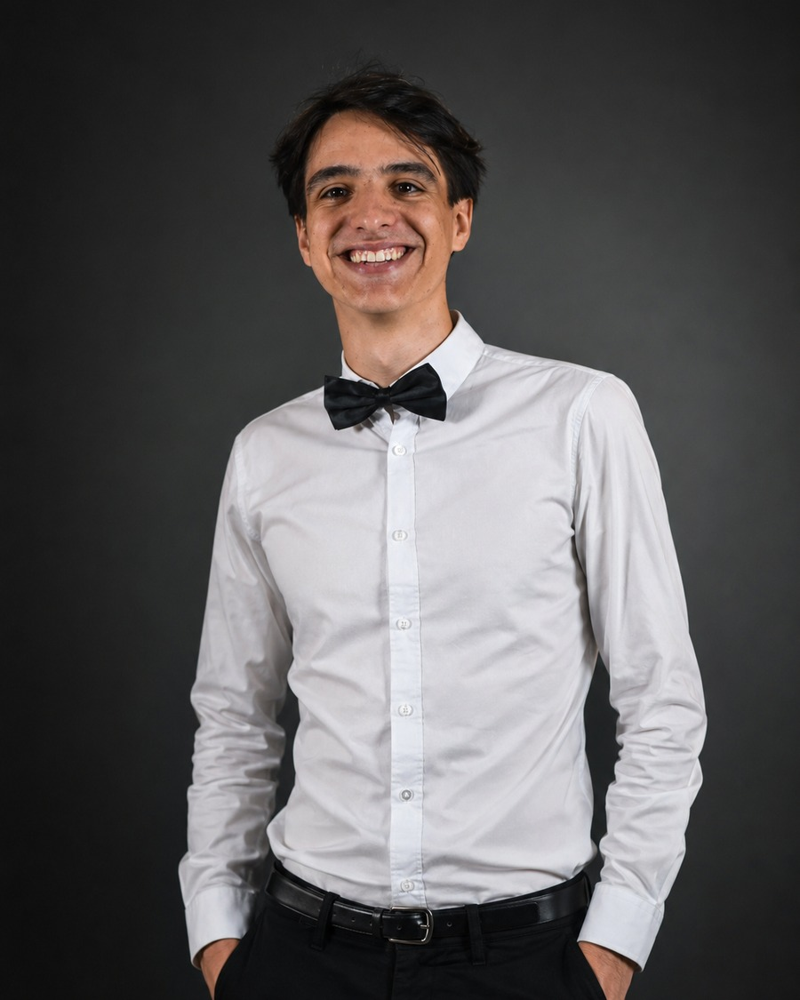
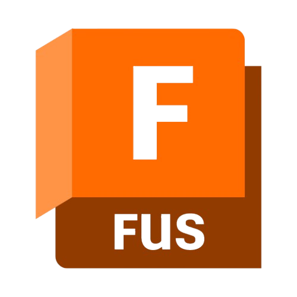
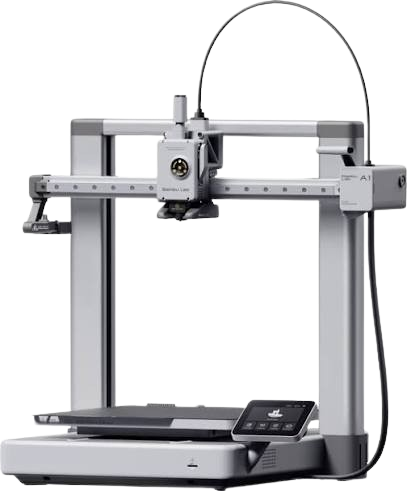
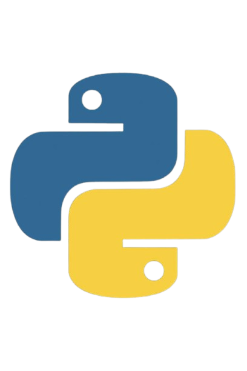
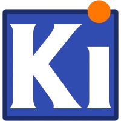
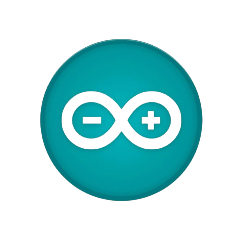
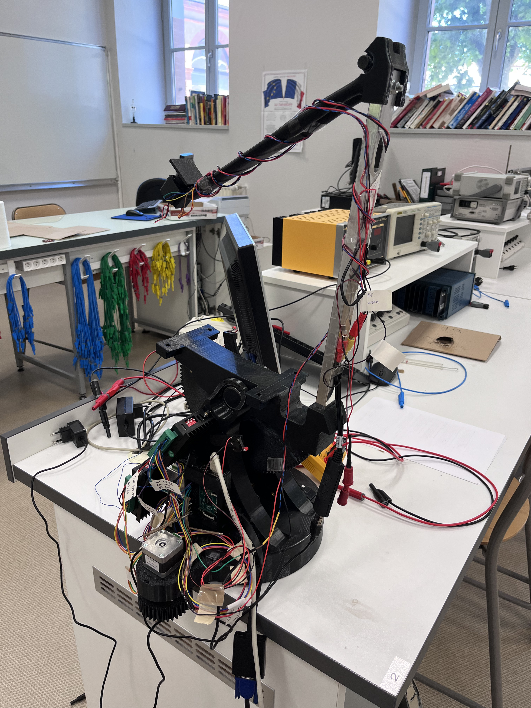

Je suis en première année à Phelma, à Grenoble, après deux ans de prépa PSI au lycée Lapérouse, à Albi. À côté des cours, je conçois et je fabrique : CAO sur Fusion 360, pièces imprimées en 3D, électronique et Python pour piloter le tout.

Équipe Robotronik : je travaille sur la mécanique du robot, sous Fusion 360. On vise la Coupe de France de Robotique (CDFR) et, si on se qualifie, Eurobot. Rien de détaillé ici pour ne pas dévoiler les stratégies de l'équipe.






Hack it. Improve it. Because good ideas deserve to be shared.
Je fais partie de l'équipe Robotronik de Grenoble INP – Phelma, côté mécanique : conception du robot sur Fusion 360. On vise la Coupe de France de Robotique (CDFR) et, si l'équipe se qualifie, Eurobot. Les détails et les choix techniques viendront plus tard, pour ne pas dévoiler les stratégies.
Concentrateur parabolique avec suivi solaire en boucle fermée — détection de la position du foyer par caméra thermique FPV, correction motorisée sur deux axes altitude et azimut via Raspberry Pi. Simulation thermique 2D par éléments finis.
Voir le projet →
Parabole — système completLunettes binoculaires de vision nocturne et thermique — boîtier entièrement imprimé en 3D, caméras starlight Runcam Night Eagle 3 V2, micro-écrans OLED 0.4" avec combo optique intégré.
Voir le projet →Bras robotique 5/6 axes à structure carbone. Pièces FDM PETG et usinées CNC, actionneurs closed-loop stepper + servos, piloté par Raspberry Pi. Objectif : ouvrir une bouteille de bière.
Voir le projet →Outil web pour le jeu en ligne Torn City — calcule les meilleurs voyages à l'étranger selon ta session de jeu, ton mode de transport et tes bonus, avec estimation de stock en temps réel via l'API YATA.
Voir le projet →Un projet, une question, une collaboration : écris-moi.